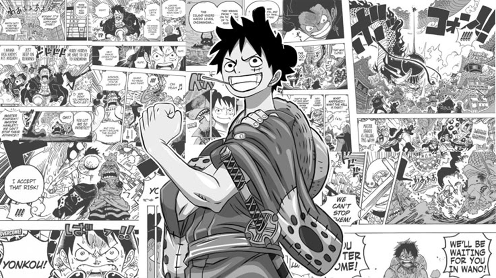

Manga: Where It All Begins
Before they ever hit the screen, the vast majority of anime series begin their lives as "manga"—Japanese comic books or graphic novels. Unlike American comics, which are traditionally read in full color from left to right, manga is almost always published in black and white and is read from right to left. This unique format allows artists, known as "mangaka," to utilize incredible detail in line art, shading, and panel layouts to convey motion and emotion in ways that often translate directly into the dynamic storyboards used for anime adaptations.
The manga industry is massive in Japan, appealing to every conceivable demographic, from young children to business executives. Stories are typically serialized in weekly or monthly magazines like Weekly Shonen Jump (home to hits like One Piece and Naruto), where popularity polls can determine if a series continues or gets cancelled. Popular chapters are later collected into volumes called "tankobon." For many dedicated fans, reading the manga is essential because it is often considered the purest version of the creator's vision, free from the "filler" episodes, pacing issues, or censorship that can sometimes plague anime adaptations due to broadcast restrictions or production schedules.
